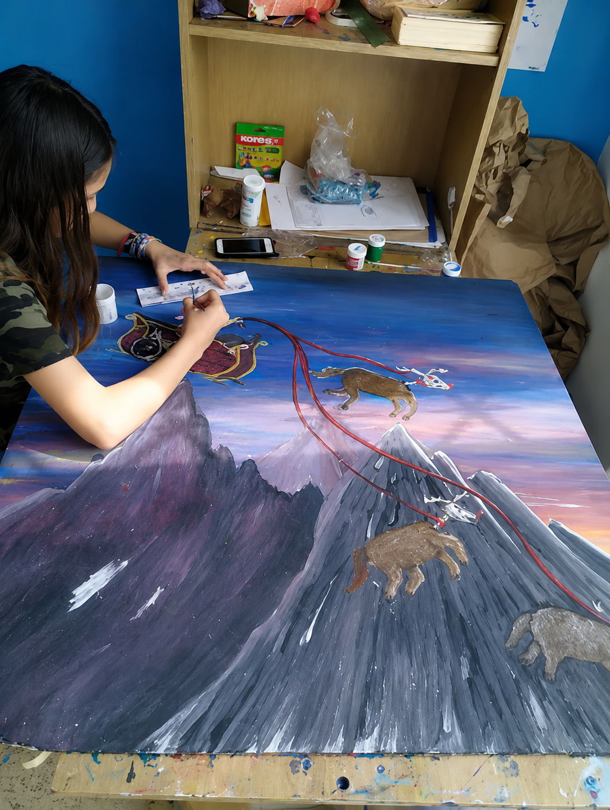

Mezcla y teoría del color
Comprende relaciones, contrastes y mezclas para construir paletas armónicas y expresar diferentes sensaciones.
Explora el color, la composición y diferentes técnicas de pintura mientras desarrollas sensibilidad visual, creatividad y nuevas maneras de representar lo que sientes e imaginas.

El proceso comienza con reconocimiento y mezcla del color, manejo de herramientas y ejercicios de composición, avanzando hacia obras donde cada estudiante toma decisiones propias.
Cada ejercicio combina fundamentos visuales con exploración de pinceladas, capas, contrastes y texturas para fortalecer técnica, confianza y libertad creativa.
Un proceso que combina teoría del color, técnica, composición y exploración artística.
Comprende relaciones, contrastes y mezclas para construir paletas armónicas y expresar diferentes sensaciones.
Practica control, dirección y variedad de pinceladas para producir líneas, manchas, capas y texturas.
Organiza formas, luces, sombras y puntos de atención para crear imágenes equilibradas y con profundidad.
Utiliza color, gesto y materia para comunicar emociones, ideas e historias desde una mirada personal.
Cada ejercicio presenta herramientas de color, composición y aplicación de manera progresiva.
El curso abre espacios para combinar paletas, pinceladas, capas y soluciones visuales propias.
La práctica fortalece sensibilidad, observación y confianza para tomar decisiones de color y forma.
Cada estudiante aplica lo aprendido en pinturas conectadas con sus intereses, emociones e imaginación.
Este curso está pensado para niños y jóvenes interesados en comenzar o fortalecer su proceso pictórico, descubrir técnicas, comprender el color y encontrar nuevas maneras de representar emociones, ideas y experiencias.
Descubre otros cursos para experimentar con trazo, materiales, formas y texturas.
Agenda una clase gratuita y conoce personalmente la experiencia KIRU.